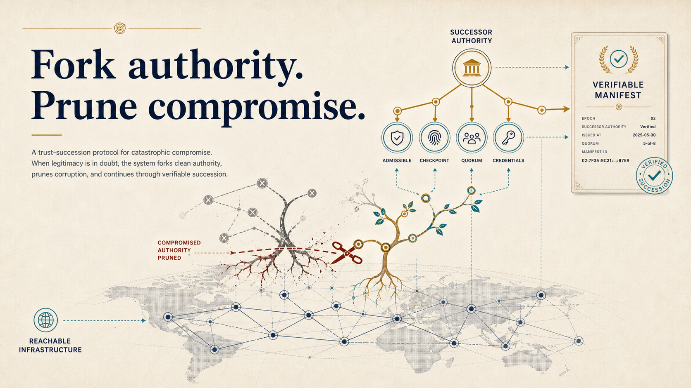
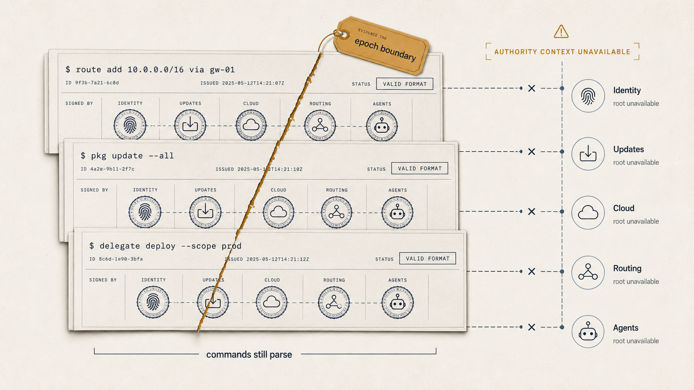
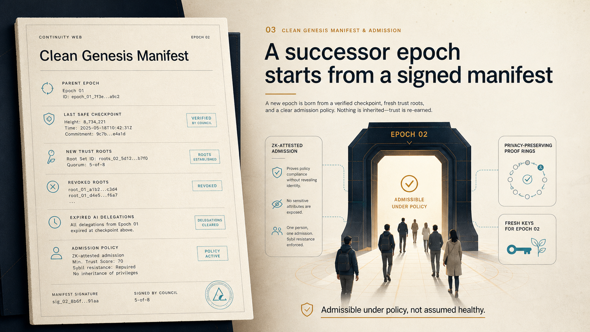
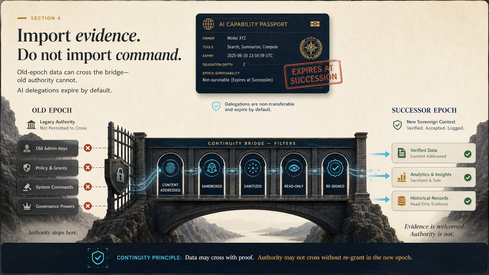
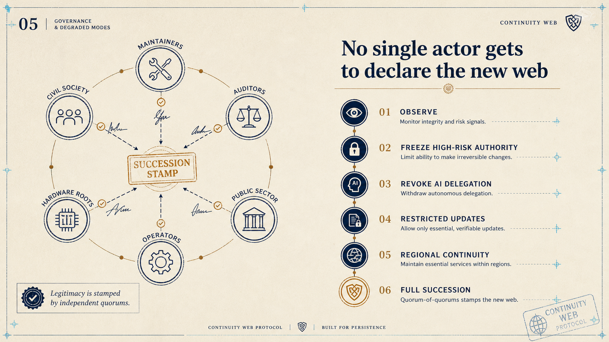
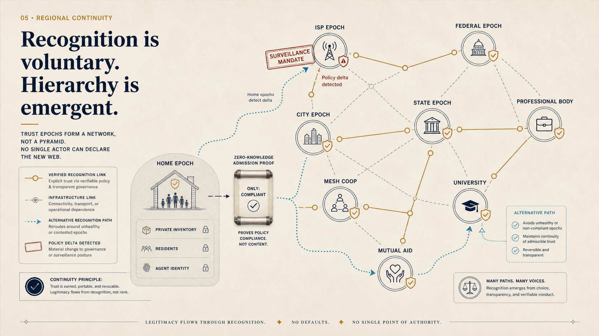
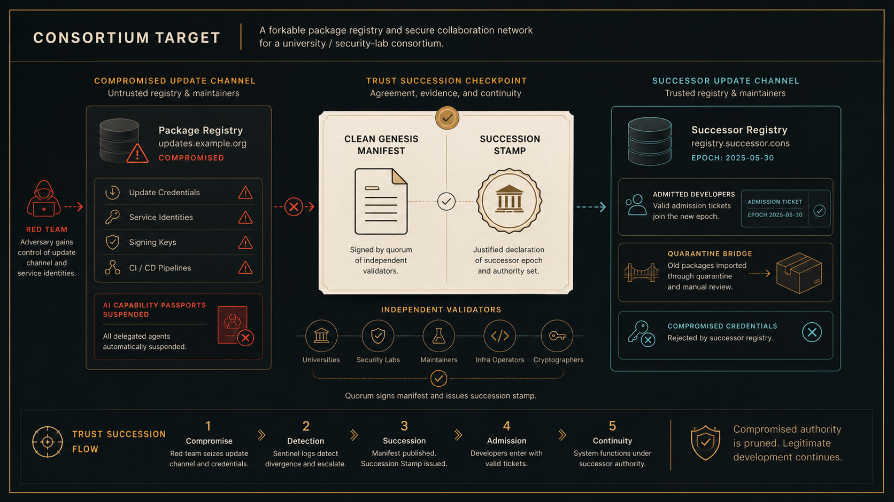

Continuity Web
A compact web presentation for the trust-succession brief.

Failure mode
Catastrophic compromise leaves ordinary commands looking valid after the authority environment is no longer trustworthy.

The old substrate can still move data while its authority roots are no longer admissible.
Continuity Web does not replace incident response. It gives legitimate actors a way to leave a poisoned command layer behind.
The old network can remain useful as evidence, history, and transport. It should not automatically authenticate, update, govern, delegate, or command the successor network.Succession manifest
A successor epoch starts by declaring the evidence boundary and the fresh roots that replace contaminated command paths.

The manifest is the hard boundary between a contaminated epoch and the successor ruleset.
Quarantine bridge
The bridge is deliberately narrow: useful old-epoch records can cross as evidence, but command rights do not inherit legitimacy.

The key distinction is admissibility: evidence may be imported, authority must be re-earned under the successor epoch.
Governance stamp
Legitimacy comes from scoped claims by independent quorums, not from a single privileged actor announcing that the new epoch is real.

A succession claim is inspectable because every stamp is scoped to a manifest, evidence root, validator set, and status.
Federation graph
This is the composition layer: epochs recognize one another by policy, and hierarchy emerges from useful recognition rather than protocol fiat.

The graph is the point: recognition stays voluntary, policy deltas stay visible, and alternate paths remain possible.
Privacy is the security property, not its opposite.
Proving admissibility to an upstream epoch uses a zero-knowledge proof. The verifier learns only "compliant." Device inventory, agent identity, residents, and transaction history never leave the prover. The asymmetry is verifiable to allies, opaque to adversaries.Build the package registry that can survive its own compromise.
Prove trust succession in a bounded software ecosystem before asking the wider internet to believe it.
MVP demonstration
Compromise the update channel, fork authority into a successor registry, admit developers with tickets, and quarantine old packages.

The demo is narrow on purpose: if authority cannot be recovered here, it will not be recovered at internet scale.